AURAL
User Guide
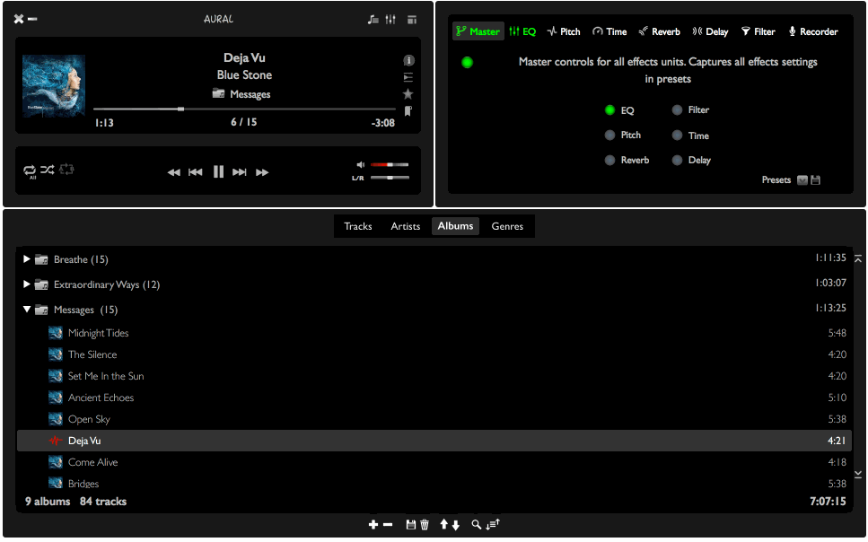
Table of contents
Aural Player is a free and open source audio player
application for the macOS platform. Inspired by the classic Winamp
player for Windows, it is designed to be to-the-point and easy to use,
with a variety of convenient controls, flexible views, and some sound
tuning capabilities.
Supports OS X 10.10 (Yosemite) or later versions. Older
versions of OS X are not supported.
Aural Player was written by an audio enthusiast learning to program
on macOS, coming to Swift programming from years of Java programming.
This project was inspired by the developer’s desire to create a
Winamp-like substitute for the macOS platform (with no feature bloat or
unnecessary annoyances like iTunes) and to learn more about audio
playback and effects.
- Playback of MP3, AAC, AIFF/AIFC, WAV, and CAF audio
- Supports M3U/M3U8 playlists
- Sound effects: Graphic equalizer, Pitch shift, Time stretch, Reverb,
Delay, Filter
- Recording of clips in AAC/ALAC/AIFF formats
- Track segment looping
- Display of ID3 and iTunes metadata, including artwork (when available)
- Grouping of tracks by artist/album/genre for convenient playlist
browsing
- Favorites list and recent items lists for added convenience
- Searching and sorting of playlist, with type selection to quickly
locate tracks/groups by name
- Multiple compact and flexible view options - playlist
docking/maximizing and collapsible views
- Extensive set of keyboard shortcuts and menu items for quick and
convenient access to functionality
- Gesture recognition for essential player/playlist controls
(trackpad/MagicMouse)
Main window

Playlist window
The following are detailed descriptions of how to perform common
tasks when using Aural Player.
You can add the following types of items:
- Supported audio files: MP3, AAC, AIFF/AIFC, CAF, and
WAV files
- Supported playlist files: M3U and M3U8 files
- Folders: When you add folders, files inside them will
be added recursively, as long as they are supported audio/playlist files
(listed in the 2 bullet points above), and all unsupported files will be
ignored.
Note - AAC files may either have a file extension of .aac or
.m4a. If the format is AAC, the file will be supported, regardless of its
extension. However, if a file has an .m4a extension, it is possible that
it has the ALAC format. Aural Player is not capable of playing back such
files.
Tracks can be added in one of two fundamental ways:
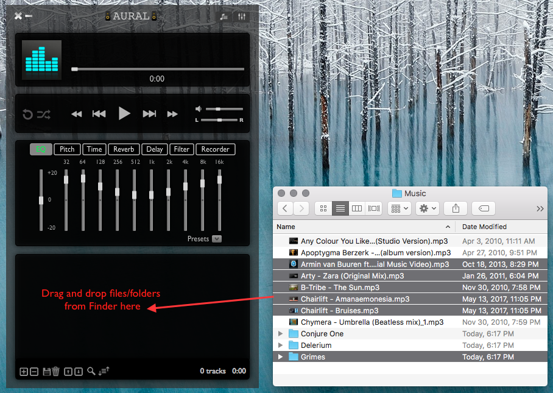
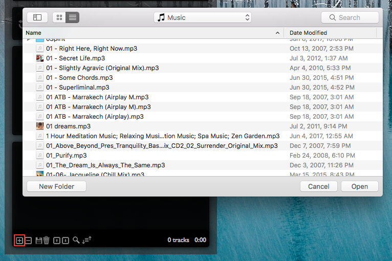
To invoke the file dialog, do one of the following:
- Click the
button on the playlist controls bar
- Click the menu item Playlist > Open files / playlists
- Keyboard shortcut ⌘O
Note - The playlist will automatically and quietly
reject any duplicate tracks that are added, while adding all other unique
tracks.
Demo: See video AddingFiles.mp4
for a visual demonstration (right click link and hit Save Link As ...).
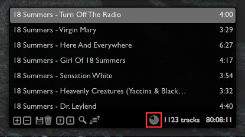
Note that whenever tracks are added to the playlist, they will be added
in the background, allowing you to continue interacting with and using the
app normally. This is especially useful when adding large
playlists/folders or large numbers of tracks. While this is ongoing, a
spinner element will be displayed in the playlist summary area (see image
above), providing a visual representation of the progress of the track
loading operation.
When the spinner disappears from view, the track add operation is
complete. However, track display names and durations in the playlist view
may continue to be updated over time, as information is read from disk.
This will not interfere with normal usage of the app.
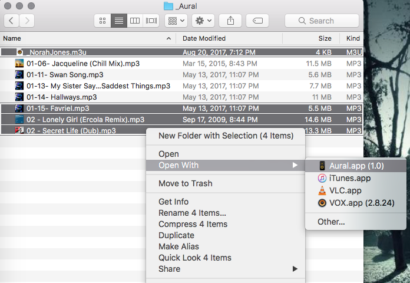
Supported audio files and playlists can be opened with Aural Player,
directly from Finder. To do so, perform the following steps:
- Launch a Finder window
- Locate and select the desired audio/playlist files, within Finder
- Right click the selection, and choose "Open With Aural.app", as
illustrated in the image above
If it is not already running, Aural Player will launch, with your
selected files/playlists added to its current playlist, and the first file
from your selection will begin playing. If Aural Player is already
running, your selected files will be appended to its current playlist and
the first file from your selection will begin playing, interrupting any
track that is already playing.
Demo: See video LaunchingFromFinder.mp4
for a visual demonstration (right click link and hit Save Link As ...).
As with any time you add tracks to the playlist, a spinner will show the
progress of the track add operation. This is explained in detail in the
above section Asynchronous track loading /
Progress.
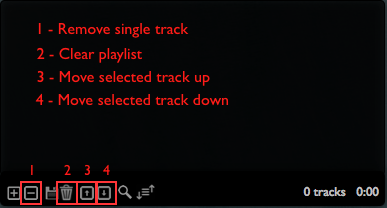
To remove a single track, select the track and do
one of the following:
- Click the
button on the playlist controls bar
- Click the menu item Playlist > Remove selected track
- Keyboard shortcut ⌫
To clear the entire playlist, do one of the
following:
- Click the
button on the playlist controls bar
- Click the menu item Playlist > Clear playlist
- Keyboard shortcut ⌘⌫
To move a single track up one row in the playlist, select
the track and do one of the following:
- Click the
 button on the playlist controls bar
button on the playlist controls bar
- Click the menu item Playlist > Move selected track
up
- Keyboard shortcut ⇧↑
Note - To move a track up in the playlist continuously,
click and hold the
button or press and hold the ⇧↑
key combination. The track will continue moving up in the playlist till
the button/key combination is released.
To move a single track down one row in the playlist, select
the track and do one of the following:
- Click the
 button on the playlist controls bar
button on the playlist controls bar
- Click the menu item Playlist > Move selected track
down
- Keyboard shortcut ⇧↓
Note - To move a track down in the playlist
continuously, click and hold the
button or press
and hold the ⇧↓ key combination. The
track will continue moving down in the playlist till the button/key
combination is released.
The entire playlist can be sorted. See section "Sorting"
for more details.
Demo: See video MoveAndRemoveTracks.mp4
for a visual demonstration (right click link and hit Save Link As ...).
The current playlist can be saved to, and loaded back from, a
M3U/M3U8 file. Since M3U is a widely accepted and
standard format, Aural Player can also read playlists saved by
other applications, , as long as they conform to the M3U/M3U8 format and
the information inside them is valid.
Note - Aural Player saves track file paths in .m3u
playlists as relative paths, for maximum portability.
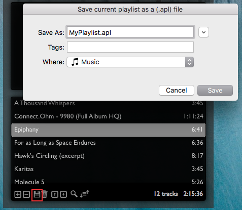
To save the current playlist to a file, do one of the following:
- Click the
button on the playlist controls bar
- Click the menu item Playlist > Save playlist
- Keyboard shortcut ⌘S
You can load a saved playlist by selecting the .m3u/.m3u8 playlist
file when adding tracks by either using the file dialog or dragging and
dropping from Finder. (Adding tracks is described in detail in the "Adding
tracks" section)
Demo: See video SaveAndLoadPlaylist.mp4
for a visual demonstration (right click link and hit Save Link As
...).

You can record a clip (of any desired length, limited by available
disk space) of the player's output, and save it into a file on disk. The
recording will capture sound exactly as you hear it, i.e. all applied
sound effects, volume, stereo pan, and other parameters, will be
reflected in the recording. This could be useful when you're only
interested in a short clip of an audio track, or if you'd like to have
different versions of the same track with sound effects applied to it.
You can record the clip in one of 3 supported audio formats:
- Advanced Audio Codec (AAC): A lossy compressed audio file
format similar to MP3. It generally provides better quality than MP3,
for a given data rate. The file extension used will be .aac.
- Apple Lossless Audio Codec (ALAC): A lossless compressed
audio file format similar to AIFF (below) but with smaller file sizes.
The file extension used will be .m4a.
- Audio Interchange File Format (AIFF): A lossless uncompressed
audio file format similar to WAV, that provides CD quality audio but
large file sizes. The file extension used will be .aif.
To do this, you will use the Recorder unit tab of the
Effects panel (see picture above).
- Select a format: From the Format dropdown menu,
choose a recording format (all available formats are described in the
bullet list above).
- Start: To start recording, click the
 button, and recording will begin immediately. The duration and file
size of your recording will be updated as the recording proceeds. In
this state, the tab button caption "Recorder" will be
highlighted in red, indicating an ongoing recording. During a
recording, you may freely switch to another effects unit tab and
change tracks or perform other player functions as you normally would.
button, and recording will begin immediately. The duration and file
size of your recording will be updated as the recording proceeds. In
this state, the tab button caption "Recorder" will be
highlighted in red, indicating an ongoing recording. During a
recording, you may freely switch to another effects unit tab and
change tracks or perform other player functions as you normally would.
- Stop: When done recording, simply go back to the recorder
unit tab and click the
button, and you will be presented with a file dialog to save the file
onto disk.
- Save: Choose a filename and click Save, or, to
discard the recording, click Cancel.
Demo: See video RecordClip.mp4
for a visual demonstration (right click link and hit Save Link As ...).
Note - If you attempt to exit the application
while a recording is ongoing, you will be prompted to either
save/discard it or cancel the exit. This is to ensure that you don't
lose a recording you forgot about.

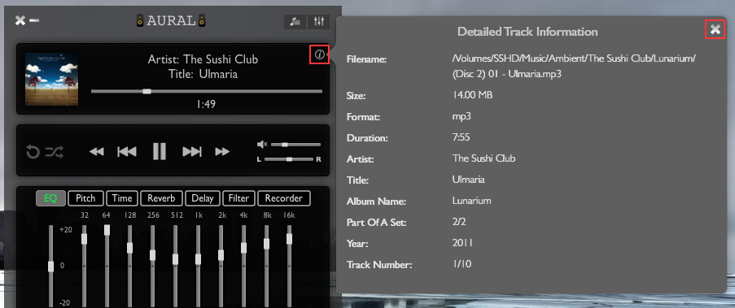
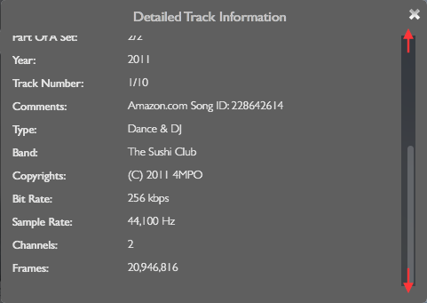
While a track is playing, you can get detailed information about
it, such as filesystem information, audio information, and ID3/iTunes
metadata (when available).
To use this feature (while a track is
playing/paused), do one of the following:
- Click the
button in the Now playing info panel at the top of the window.
- Click the menu item Playback > Detailed track info
- Keyboard shortcut ⌘I
A scrollable popover view will be displayed with information in
a tabular key/value format. Scroll this view to reveal all rows of info.
This view will be automatically updated as you change tracks.
When done, dismiss the popover view by doing one of the following:
- With any of the same three buttons/shortcut you used to display
the view
- Click the
button on the popover view
- Press Esc
More details about the displayed information are listed below.
Filesystem information about a track includes:
- Filename: The absolute filesystem path/name of the
file containing the audio track
- Size: The filesystem size of the file containing the
audio track
Audio information includes technical information about the audio track.
This includes:
- Format: The audio format of the file e.g. "mp3" or
"aac"
- Bit Rate: The amount of data stored/processed per
second of audio (in kbps)
- Sample Rate: The number of samples contained per
second of audio (in Hz)
- Channels: The number of independent channels of audio
information available. 1 channel indicates Mono sound, and 2 channels
indicates Stereo sound
- Frames: The total number of frames (i.e. samples) in
the audio track
Aural recognizes ID3v2 metadata tags, when available, and will display
them in a user-friendly human-readable format. The more prevalent version
2.3, and the newer but less common version 2.4, are both supported.
Examples of useful ID3 tags include:
- APIC (Artwork). This information is displayed as an
image thumbnail in the Now Playing Info box
- TPE1 (Artist)
- TIT2 (Title)
- TALB (Album Name)
- TRCK (Track Number)
- TCON (Content Type / Genre)
Refer to the following ID3 specification pages for more information about
the ID3 standard.
ID3v2.3: http://id3.org/id3v2.3.0
ID3v2.4: http://id3.org/id3v2.4.0-frames
Aural also recognizes iTunes metadata tags, when available, and will
display them in a user-friendly human-readable format. Examples of useful
iTunes tags include:
- @alb (Album)
- @ART (Artist)
- @name (Song Name)
- trkn (Track Number)
- apID (Apple ID)
- atID (Artist ID)
- cnID (Song ID)
While Aural does not explicitly support metadata formats other than ID3 /
iTunes, it will display such metadata in its raw form.
Demo: See video DetailedTrackInfo.mp4
for a visual demonstration (right click link and hit Save Link As ...).
The function of the effects panel is to let you tweak sound and
record player output It contains 6 independent effects units and a
recorder unit. The 6 effects units form a signal processing chain that
passes the modified sound to your output device.
 |
Most
effects units have an On/Off switch that lets you activate or
deactivate them independently of other units. It looks like the
image on the left.
The EQ (Equalizer) unit does not have this switch and is
thus always active.
The Recorder unit does not require a separate switch,
because the Start/Stop button performs this function.
|
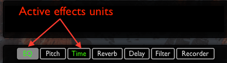
The tab button caption for any of the 6 effects units will be highlighted
in green when the respective unit is active. The tab button caption for
the Recorder unit will be highlighted in red when it is active. This
provides a simple and convenient way to determine which of the units are
active at any given time, without having to check all 7 panels. Again, the
EQ unit is always active, so its tab button caption will always be
highlighted.
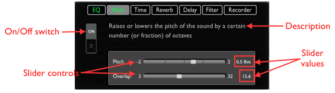
Most effects units display a label with a brief description of the
function performed by the unit, an On/Off switch (described in the section
"On/Off switch"), and a set of controls to
manipulate the sound accordingly.
As you move any of the slider controls, you will see its updated value,
and its respective measurement unit, displayed in a label adjacent to the
slider. For instance, in the image above, the current value for the Pitch
slider is shown as "0.5 8ve" meaning that the pitch of the player has been
raised by roughly half an octave.
Demo: See video EffectsPanel.mp4
for a visual demonstration (right click link and hit Save Link As ...).
Each of the individual effects units are explained in detail below.
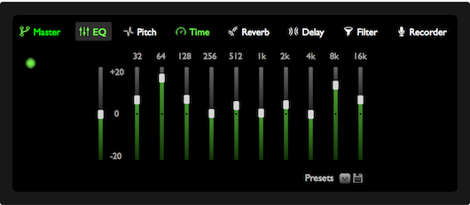
The EQ unit provides a 10-band parametric equalizer to adjust the
amplitude of the sound at different frequency bands across the hearing
range. This can be used to boost or attenuate different bass/mid/treble
sounds, based on the user's auditory preferences and/or the type of music
being played. The global gain control can be used to set a baseline
amplitude that is applied to all 10 frequency bands.
The gain value for each of the 11 sliders ranges from -20 dB (Decibel) to
+20 dB.
There are 15 presets available, and they can be selected from the Presets
drop down menu.
The EQ unit is always active, as indicated by the highlighted tab button
caption in green.
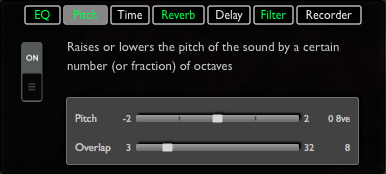
The Pitch Shift unit allows you to change the overall pitch of the sound,
without affecting its tempo. For instance, to achieve a "chipmunk" effect,
the pitch can be raised. Or, to make a voice sound robotic or
machine-like, the pitch can be lowered. You might decide that a singer's
voice or a synthesizer instrument sounds better a few tones higher than in
the original song. The Pitch Shift unit allows you fine grained control
over the pitch, so you can tune the song to your desired pitch.
The unit consists of two controls:
- Pitch: This is the actual pitch shift offset from the
original sound's pitch. It is measured in octaves, abbreviated as 8ve.
The range of values allowed is -2 octaves (i.e. 2 octaves lower) to +2
octaves (i.e. 2 octaves higher). A value of 0 indicates no change from
the original pitch.
- Overlap: This parameter determines the amount of overlap
between segments of the input audio signal. Higher overlap values will
result in a smoother chorus effect, while lower values will result in
choppiness. Adjust the overlap to get the right balance of chorus vs
choppiness. This parameter will impact CPU usage. The value ranges
between 3 and 32.
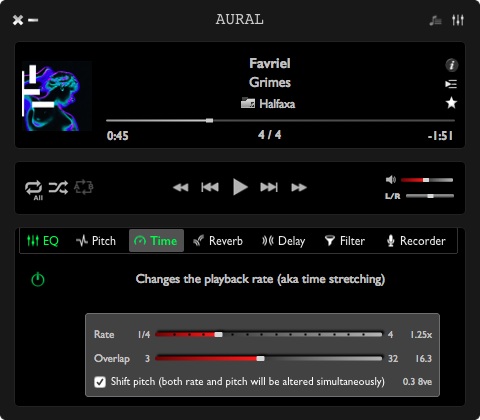
The Time Stretch unit allows you to change the playback rate or tempo of
the sound, without changing its pitch. One potential application of this
unit is to slow down a speaker's voice when listening to an audiobook, if
you feel the speaker's tempo is too high for you to clearly understand and
grasp what is said. Certain songs might sound better at a tempo different
from the original tempo. Again, this is a question of auditory
preferences.
The unit consists of 2 controls:
- Rate: This is simply the playback rate. A lower value
represents a slower tempo, and a higher value indicates a higher
tempo. The rate can range from 0.25x (or 1/4th) to 4x. A value of 1x
indicates no change from the original tempo.
- Overlap: This parameter determines the amount of overlap
between segments of the input audio signal. Higher overlap values will
result in a smoother chorus effect, while lower values will result in
choppiness. Adjust the overlap to get the right balance of chorus vs
choppiness. This parameter will impact CPU usage. The value ranges
between 3 and 32.
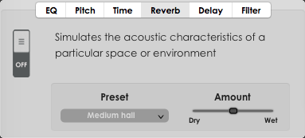
The Reverb (short for "reverberation") unit simulates a particular
acoustical space or environment, by persisting a sound for a short while
after it is initially produced. For instance, if you're listening to
classical/vocal music and would like to simulate a live performance in
an auditorium space, you can do so by adding reverb.
The unit consists of 2 controls:
- Preset: Defines the acoustical space or environment
being simulated. There are 9 presets to choose from, from a drop down
menu.
- Amount: Defines how much the reverb effect is applied.
The value ranges from 0 to 100. A value of 0 indicates no reverb
effect, regardless of the other parameter values. The value is
displayed as x/(100 - x), which is referred to as "dry/wet mix", dry
being the original signal, and wet being the modified signal with the
reverb effect. So, an amount value of 31 will be displayed as "31/69".
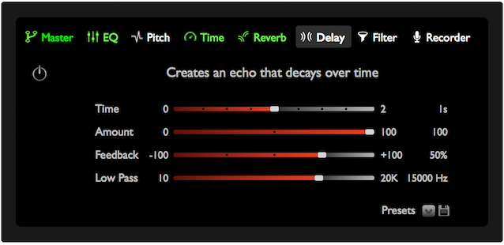
The Delay unit produces a repeating echo of the original sound,
that decays over time. One potential use would be for vocal tracks where
there are gaps that can be filled with an echo that slowly fades, for
emphasis.
The unit consists of 4 controls:
- Time: Defines how long after the original sound is
produced, the echo is initiated. In other words, it is the difference
in time between when the original sound is heard and when the first
echo is heard. The value is measured in seconds, and ranges from 0 to
2.
- Amount: Defines how much the delay effect is applied. The
value ranges from 0 to 100. A value of 0 indicates no delay effect,
regardless of the other parameter values.
- Feedback: Defines the amount of the output signal fed
back into the delay line to produce repeated echoing. The value ranges
between -100 and 100%.
- Low Pass Cutoff: Defines the cutoff frequency above which
high frequency content is eliminated from the delay. In other words,
sounds at frequencies above the cutoff will not be echoed. The value
ranges across the entire hearing range, from 10Hz to 20KHz.
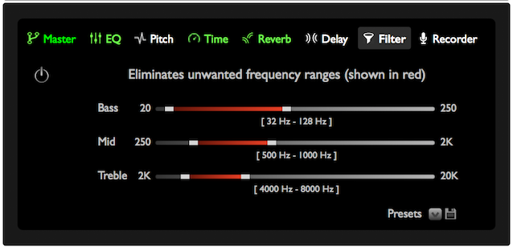
The Filter unit (almost completely) eliminates sounds of certain
(unwanted) frequencies, allowing all other frequencies to be heard. This
can be useful if, for instance, you want to focus entirely on the vocals
of a track and want to eliminate the bass and treble frequencies. Or,
conversely, if you're doing karaoke, and want to eliminate the vocals from
the original track, keeping the bass and treble frequencies intact, the
filter allows you to do so.
Note that the filter is, in its function, similar to the Equalizer unit,
in that it attenuates certain sound frequencies while passing others.
However, where it differs from the Equalizer is that it allows more
precise control over which frequencies are completely eliminated. On the
other hand, the Equalizer is more flexible in allowing variable amplitudes
for different frequency bands. So, the two units have different
applications.
The unit consists of 3 range slider controls, allowing selection of a
range within each of the main frequency bands: Bass (20Hz - 250
Hz), Mid (250Hz - 2KHz), and Treble (2KHz - 20KHz).
Frequencies within each of the 3 selected ranges, shown in red color, will
be eliminated from the output signal. Labels show the values of each
selected frequency range.
The Recorder unit is covered in detail in the "Recording
a clip" section.
The repeat and shuffle functions allow you to alter the playback sequence of
tracks in your playlist.

There are 3 repeat modes:
- Off: No tracks will be repeated
- One: The same will be repeated indefinitely. If the
next/previous or a random track are selected, repeat One mode will
stay on and will repeat the newly selected track. Cannot be used in
conjunction with shuffle mode On.
- All: All playlist tracks will be repeated indefinitely.
When the end of the playlist is reached, playback will resume with the
first track.
To toggle between the repeat modes, click
the  button in the player controls panel.
button in the player controls panel.
To select a specific repeat mode, expand the menu item Playback
> Repeat Mode and select a repeat mode.
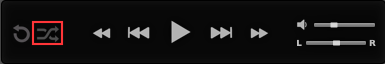
There are 2 shuffle modes:
- Off: No tracks will be shuffled.
- On: The entire playlist will be shuffled. If repeat mode
is Off, all playlist tracks will play exactly once, before
playback ends. If repeat mode is All, all playlist tracks will
play exactly once, and then a new shuffle sequence will be computed,
and playback will resume. You can navigate backwards and forwards
within the entire shuffle sequence, just as you would without shuffle
on. Cannot be used in conjunction with repeat mode One.
To toggle between the shuffle modes, click
the
button in the player controls panel.
To select a specific shuffle mode, expand the menu item Playback
> Shuffle Mode and select a shuffle mode.
Note - Repeat mode One and Shuffle mode On
are mutually exclusive, i.e., if you are repeating one track, shuffling
is not applicable. Conversely, if you're shuffling tracks, repeating one
track is not applicable.
Demo: See video RepeatAndShuffle.mp4
for a visual demonstration (right click link and hit Save Link As ...).
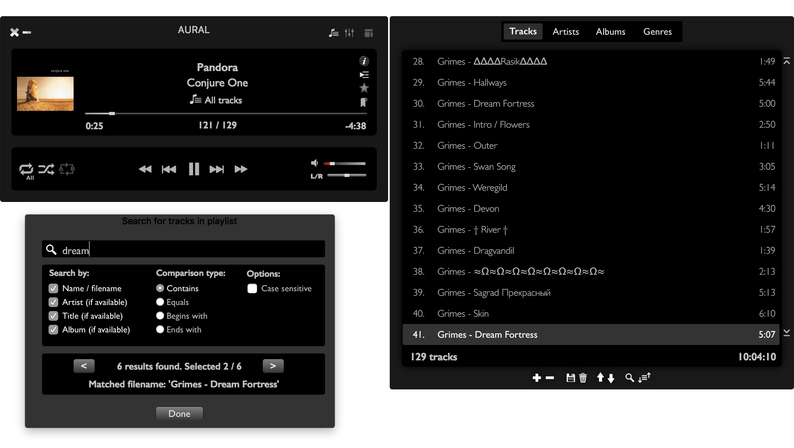
The playlist can be searched for tracks matching certain criteria.
This can be useful when the playlist is large and scrolling through it
is too time consuming.
To invoke the search dialog, do one of the following:
- Click the
button on the playlist controls bar
- Click the menu item Playlist > Search playlist
- Keyboard shortcut ⌘F
Once the search dialog is open, select your desired search criteria
(described in below sections), and start typing your query text. The
search will be performed and updated as you type.
If the search yields results, the total number of results
will be displayed in the search dialog, and the first result will be
selected in the playlist. For each result, the field that matched the
query text will be shown, along with its value (see image above). Use
the
and
buttons to select the previous or next result in the set of results. As
you navigate through the result set, the playlist selection will be
updated to show the current result. When done with the search, click the Done
button or press Esc to dismiss the search dialog.
- Name / filename: Finds results whose
display name (i.e. the name displayed in the left column of the
playlist) matches the query text, OR whose filename (i.e. the name of
the filesystem file) matches the query text.
- Artist (if available): Finds results
whose artist ID3 metadata field, if available, matches the query text.
- Title (if available): Finds results whose title ID3
metadata field, if available, matches the query text.
- Album (if available): Finds results whose album ID3
metadata field, if available, matches the query text.
For a more lenient search with maximum results, select more (or
all) search fields. For a stricter search with fewer results, choose
fewer search fields.
- Contains: This kind of comparison will
match if the search field value for a track contains the query text
anywhere within itself. Example: The track name "Grimes - Be a body"
contains the query text "Grim".
- Equals: This kind of comparison will
match only if every character of the search field value for a track
equals the corresponding character in the query text.
- Begins with: This kind of comparison will match if the
search field value for a track begins with the query text.
Example: The track name "Grimes - Be a body"
begins with the query text "Grim".
- Ends with: This kind of comparison will match if the
search field value for a track ends with the query text. Example: The
track name "Grimes - Be a body" ends with the query text "body".
For the most lenient search with maximum results, select Contains
as the comparison type. For the strictest possible search with the least
results, choose Equals as the comparison type.
- Case sensitive: Specifies whether the comparison is to
take case into account. If unchecked, case will be ignored, meaning a
less strict search potentially yielding more results. On the other
hand, if checked, case will be taken into account, meaning a stricter
search with potentially fewer results.
By default, all search fields will be selected, the Contains
comparison type will be selected, and the Case sensitive option
will be unselected. This is the most lenient possible set of search
criteria, yielding the maximum possible results.
Demo: See video SearchPlaylist.mp4
for a visual demonstration (right click link and hit Save Link As ...).
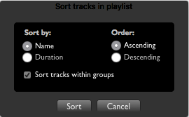
The playlist can be sorted based on certain criteria. This can be
useful when the playlist is large.
To invoke the sort dialog, do one of the following:
- Click the
button on the playlist controls bar
- Click the menu item Playlist > Sort playlist
- Keyboard shortcut ⌥S
Once the sort dialog is open, select your desired sort criteria
(described in below sections), and click the Sort button to
perform the sort. The dialog will be dismissed, and the playlist will be
updated with the new sort order. Alternatively, to cancel the sort
operation, click the Cancel button or press Esc and the
dialog will be dismissed without a sort being performed.
- Name: Sorts by the display name of tracks (i.e.
the name displayed in the left column of the playlist)
- Duration: Sorts by the duration of tracks (i.e.
the duration displayed in the right column of the playlist)
- Ascending: Sorts results in ascending order.
- Descending: Sorts results in descending order.
Demo: See video SortPlaylist.mp4
for a visual demonstration (right click link and hit Save Link As ...).
The playlist view and the effects view are both independently
collapsible, and so, can be hidden away when you don't need them, making
the player window more compact and reducing on-screen clutter, especially
useful when you have a lot of windows open. There are 4 possible view
options.
Default view (both playlist and effects view shown)
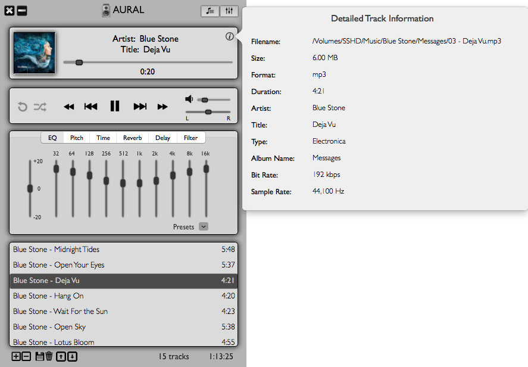 |
Compact view (both playlist view and effects view hidden)
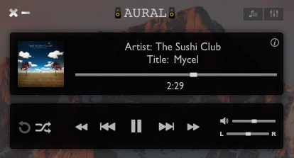
|
Playlist-only view (effects view hidden)
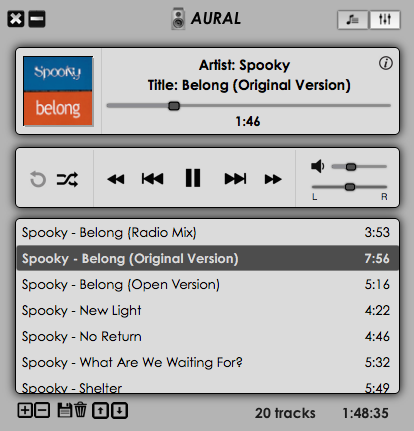 |
Effects-only view (playlist view hidden)
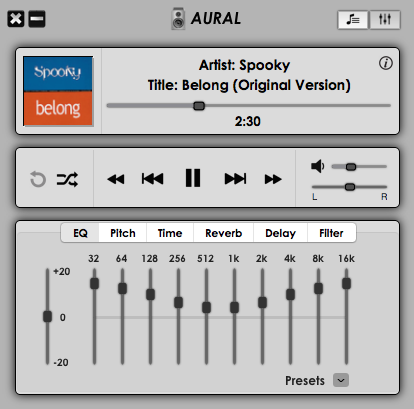 |
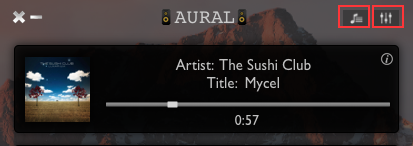
To toggle (i.e. show/hide) the playlist view, do one of the following:
- Click the
button near the top right corner of the window
- Click the menu item View > Playlist
- Keyboard shortcut ⌘1
To toggle (i.e. show/hide) the effects view, do one of the following:
- Click the
button near the top right corner of the window
- Click the menu item View > Effects
- Keyboard shortcut ⌘2
Demo: See video ToggleViews.mp4
for a visual demonstration (right click link and hit Save Link As ...).
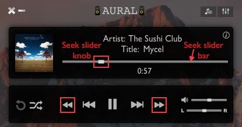
You can seek to any point in the currently playing track.
Note - The seek length/interval has a default value of 5
seconds, but can be configured in the Preferences dialog (See section "Player
preferences" for details).
To seek forward (by a single seek interval), do one of the following:
- Click the
button on the player controls panel
- Click the menu item Playback > Seek forward
- Keyboard shortcut →
Note - To seek forward continuously, click and hold the
button or press and hold the → key. Seeking forward will
continue till the button/key is released.
To seek backward (by a single seek interval), do one of the following:
- Click the
button on the player controls panel
- Click the menu item Playback > Seek backward
- Keyboard shortcut ←
Note - To seek backward continuously, click and hold
the
button or press and hold the ← key. Seeking
backward will continue till the button/key is released.
To seek to an arbitrary point, do one of the following:
- Click at the desired point on the seek slider bar
- Drag the seek slider knob to the desired point
Demo: See video Seeking.mp4
for a visual demonstration (right click link and hit Save Link As ...).
Menus
There are 2 menus.
The main menu bar has 6 sub-menus.
The Aural menu provides high level application functions.
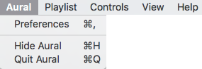
The Playlist menu provides functions to manipulate the playlist.
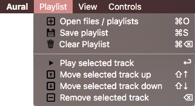
The Playback menu provides functions relevant to playback and the track
that is currently being played back.
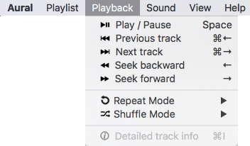
The Sound menu provides functions to alter sound output.
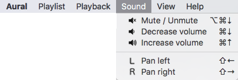
The View menu provides functions to show / hide collapsible views.
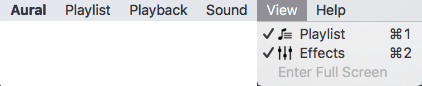
The Help menu provides links to the user guides (both a bundled PDF
version, and an online HTML version).
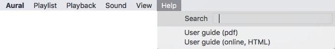
The dock menu provides a limited set of essential controls that can be
conveniently accessed while the application is running even with its
window hidden in the background. To bring up this menu, right click on the
Aural application dock icon.
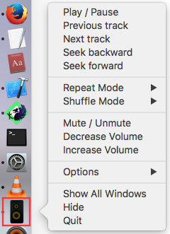
All essential functions have keyboard shortcuts. The following is a
comprehensive list of shortcuts and their equivalent buttons / menu items.
| Keyboard
shortcut |
Function |
Equivalent button |
Equivalent menu item |
| ⌘Q |
Quit application
|
|
Aural > Quit Aural
|
| ⌘H |
Hide / minimize application
|

|
Aural > Hide Aural
|
| ⌘, |
Open preferences dialog
|
(None)
|
Aural > Preferences
|
| ⌘O |
Open file dialog to add files to playlist
|
|
Playlist > Open files / playlists
|
| ⌘S |
Open file dialog to save current playlist to
a file
|
|
Playlist > Save playlist
|
| ␣ (Space) |
Toggle play / pause
|
|
Playback > Play / Pause
|
| ↩ |
Play selected track
|
(None)
|
Playlist > Play selected track
|
| ⌘← |
Play previous track
|
|
Playback > Previous track
|
| ⌘→ |
Play next track
|
|
Playback > Next track
|
| ⌥⌘↓ |
Mute / unmute
|
|
Sound > Mute / Unmute
|
| ⌘↑ |
Increase volume
|
(None)
|
Sound > Increase volume
|
| ⌘↓ |
Decrease volume
|
(None)
|
Sound > Decrease volume
|
| → |
Seek forward
|
|
Playback > Seek forward
|
| ← |
Seek backward
|
|
Playback > Seek backward
|
| ⌘I |
Get detailed track information
|
|
Playback > Detailed track info
|
| ⌘F |
Search playlist
|
|
Playlist > Search playlist
|
| ⌥S |
Sort playlist
|
|
Playlist > Sort playlist |
| ⌫ |
Remove selected track
|
|
Playlist > Remove selected track |
| ⌘⌫ |
Clear playlist
|
|
Playlist > Clear playlist |
| ⇧↑ |
Move selected track up
|
|
Playlist > Move selected track up |
| ⇧↓ |
Move selected track down
|
|
Playlist > Move selected track down |
| ↑ |
Scroll playlist up one row |
(None)
|
(None) |
| ↓ |
Scroll playlist down one row |
(None)
|
(None) |
| ⌘1 |
Show / hide Playlist view
|
|
View > Playlist
|
| ⌘2 |
Show / hide Effects view
|
|
View > Effects
|
| ⇧← |
Pan left
|
(None) |
Sound > Pan left |
| ⇧→ |
Pan right |
(None) |
Sound > Pan right |
- All controls (sliders, buttons) can be manipulated through mouse
clicks/drags
- Double clicking on a playlist track will play it
- Drag and drop files/folders from Finder into the playlist, to add
tracks
The preferences dialog lets you configure different bits of functionality to
tailor Aural Player to your liking as a user. The dialog has 3 tabs; to
invoke it, do one of the following:
- Click the menu item Aural > Preferences
- Keyboard shortcut ⌘,
Browse the 3 tabs, configure your preferences, and when done, click Save
or press ↩ to save them. Alternatively, click Cancel
or press Esc to dismiss the dialog without saving your changed
preferences.
The Player preferences tab lets you configure preferences that affect the
audio player and the user's interaction with the player.
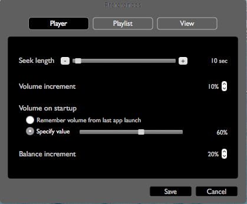
The Player preferences tab lets you configure the following preferences:
- Seek length: Determines
how much the player will jump forward / backward within the track when
seeking. The value can range from 3 seconds to 5 minutes. Choose a
shorter seek length when playing shorter tracks like single album
tracks, and a longer seek length when playing longer tracks like
audiobooks or entire music albums. For instance, to seek efficiently
within a 1 hour audiobook, a seek length of 1 to 5 minutes might be
appropriate. While playing a 3 minute song, a seek length of 5 to 10
seconds might be appropriate. The slider control can be used for large
adjustments to the value, while the + and - buttons increment /
decrement the value by 1 second.
- Volume increment: Determines
how much the volume will be incremented / decremented when increasing or
decreasing the volume in steps. The value can range from 1% to 25%.
Choose smaller values for fine-grained adjustments, and larger values
for coarse-grained adjustments.
- Volume on startup: Determines the preset volume
level when the application starts up. This preference allows two options:
- Remember volume from last app launch: When this
option is chosen, whatever was the volume level when the app last
exited, will be the volume level the app will start up with, upon its
next launch.
- Specify value: If you prefer that the app always
starts up at a specific preset volume level, you may define that value
using the slider control.
The Playlist preferences tab lets you configure the state of the playlist
upon startup and autoplay playback options.
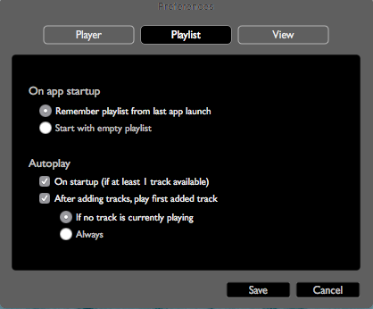
The Playlist preferences tab lets you configure the following preferences:
- On app startup: Determines the initial state of the
playlist upon app startup. This preference allows two options:
- Remember playlist from last app launch: When this
option is chosen, whatever the list of tracks was when the app last
exited, will be the list of tracks the app will start up with, upon
its next launch. This is the most natural playlist behavior.
- Start with empty playlist: When
this option is chosen, the app will start up with an empty playlist.
This could be useful if the user frequently changes the playlist and
wishes to select different tracks/playlists upon each app launch,
starting with a clean slate each time.
- Autoplay: This preference allows for convenient
automatic playback in response to certain events or app states. Two
independent options are allowed:
- On startup: On startup, if at least 1 track is
available in the playlist, playback will start immediately after app
launch.
- After adding tracks, play first added track: When
tracks are added to the playlist, it is natural to want to start
playback with the first track that was added. This option provides
that convenience. Its behavior can be tuned in one of 2 ways:
- If no track is currently playing: This is the
stricter of the two behaviors. When it is chosen, autoplay will
occur only is no track is currently playing. If a track is playing,
it will not be interrupted, and its playback will continue normally.
- Always: When this behavior is chosen, the first
newly added track will begin playing, interrupting any playing track
if there is one.
The View preferences tab lets you configure how the app is laid out and
presented visually.
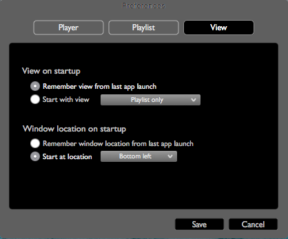
The View preferences tab lets you configure the following preferences:
- View on startup: Determines which independently
collapsible visual components or "views" of the app are shown / hidden
upon app startup. Aural Player has 2 such components: the playlist and
effects views, allowing for a total of 4 possible layouts. This
preference allows 2 options:
- Remember view from last app launch: When this
option is chosen, whatever the layout was when the app last exited,
will be the layout the app will start up with, upon its next launch.
This is the most natural view behavior.
- Start with view: Choose
this option to always start the app with a specific preset layout. The
dropdown menu provides 4 choices, one for each of the possible
combinations of collapsible views.
- Window location on startup: Determines the location,
on the screen, where the window is to be positioned at app startup. This
preference allows 2 options:
- Remember window location from last app launch: When
this option is chosen, whatever the window location was when the app
last exited, will be the window location the app window will start up
at upon its next launch. This is the most natural window behavior.
- Start at location: Choose this option to always
start the app at a specific preset window location, relative to the
screen The dropdown menu provides 9 choices, one for each of the
squares in a 3x3 on-screen grid (top/center/bottom and
left/center/right). This behavior can be handy for heavy multitaskers
who keep lots of app windows open simultaneously and need to organize
their screen real estate to avoid clutter.
Demo: See video Preferences.mp4
for a visual demonstration (right click link and hit Save Link As ...).
- Hovering over controls shows tool tips that help with using the
application. This is a good way to get acquainted with unfamiliar
application features.
- Most keyboard shortcuts have equivalent menu items that display the
relevant keyboard shortcut. This is a good way to determine the keyboard
shortcut when it cannot be remembered.
- See demo
videos to acquaint yourself with Aural Player.
Q. App crashes immediately
upon startup.
A. Try the following:
- Delete the app state file stored at
~/Documents/auralPlayer-state.json, and restart Aural Player. This may
or may not fix the problem.
- Check the app log file stored at ~/Documents/auralPlayer.log, for any
errors/warnings that may reveal clues to the cause of the problem.
Q. Error: "File(s) not
added"
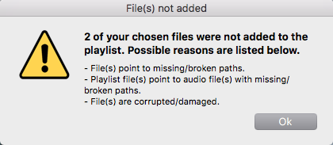
A. This error could mean one of the following:
- Files you previously chose no longer exist or have been moved/renamed
- A playlist you chose has entries that point to files that no longer
exist or have been moved/renamed
- Files you chose are corrupted/damaged and cannot be read from
When this error is shown, the valid files from your selection will have
been added normally. Only the invalid files will have been omitted. The
number of invalid files will be indicated in the error message, as shown
in the image above.
Q. Error: "Track not
playable"
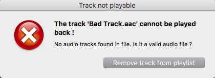
A. This error indicates that the current track in the application playlist
cannot be played back. Possible reasons include:
- The file is not a valid audio file, i.e. there are no valid audio
tracks within it
- The file has an unsupported audio format (e.g. wma)
- The file is a valid and supported audio file, but the file has been
moved/renamed/damaged since it was added to the playlist.
The error message that is shown will try to explain the root cause. It
will also indicate the name of the problem track.
Back to top